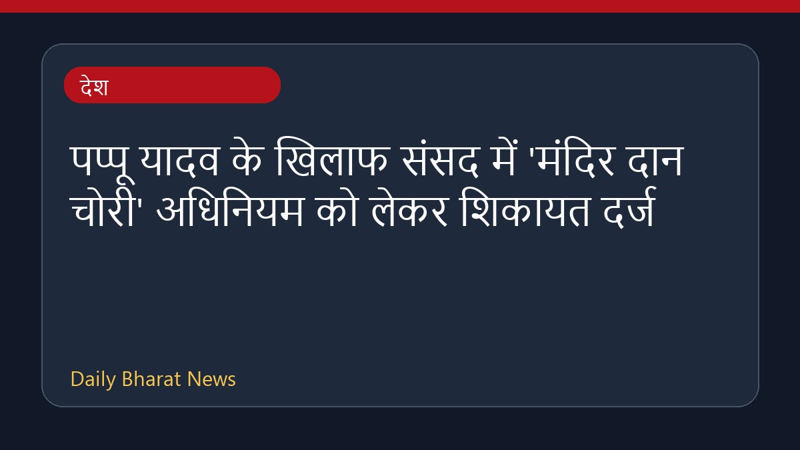

पप्पू यादव के खिलाफ संसद में 'मंदिर दान चोरी' अधिनियम को लेकर शिकायत दर्ज

संसद भवन के बाहर राम मंदिर दान को लेकर किए गए एक नाटक और विरोध प्रदर्शन के बाद पप्पू यादव के खिलाफ शिकायत दर्ज कराई गई है। इस घटना के कारण राज्यसभा में भी हंगामा हुआ और सदन की कार्यवाही स्थगित करनी पड़ी। भाजपा और अन्य संगठनों ने इस प्रदर्शन की तीखी आलोचना की है, जबकि संतों के संगठन और विश्व हिंदू परिषद ने सांसदों को निष्कासित करने की मांग की है। इस बीच, विपक्षी दलों द्वारा इस मुद्दे पर विभिन्न प्रतिक्रियाएं सामने आई हैं और सदन के बाहर तनाव का माहौल देखा गया है।
मूल स्रोत: India News Sources
Complaint Filed Against Pappu Yadav Over 'Temple Donation Theft' Act In Parliament - NDTV ↗
Complaint Filed Against Pappu Yadav Over 'Temple Donation Theft' Act In Parliament - NDTV ↗